graph TD
shadow_tower_part1a[Shadow Tower Part1 A] -- Tower Top --> shadow_tower_part2a[Shadow Tower Part2 A 2]
shadow_tower_part1b[Shadow Tower Part1 B] -- Edge --> earth_world_poisonous_cavern[Earth World
Poisonous Cavern 6]
shadow_tower_part1c[Shadow Tower Part1 C] -- Top --> human_world_cursed_region[Human World
Cursed Region 3]
shadow_tower_part1b[Shadow Tower Part1 B] -- Middle --> water_world_sunken_river_area[Water World
Sunken River Area 8]
shadow_tower_part1c[Shadow Tower Part1 C] -- Edge --> shadow_tower_part2a[Shadow Tower Part2 A 2]
shadow_tower_part1c[Shadow Tower Part1 C] -- Middle --> human_world_solitary_region[Human World
Solitary Region 3]
shadow_tower_part2a[Shadow Tower Part2 A 2] -- Top left --> shadow_tower_part1a[Shadow Tower Part1 A]
shadow_tower_part2a[Shadow Tower Part2 A 2] -- Top right --> shadow_tower_part1c[Shadow Tower Part1 C]
shadow_tower_part2b[Shadow Tower Part2 B 2] -- Edge --> water_world_impure_pool_area[Water World
Impure Pool Area 3]
shadow_tower_part2b[Shadow Tower Part2 B 2] -- Middle --> earth_world_false_pit_cavern[Earth World
False Pit Cavern 3]
shadow_tower_part2b[Shadow Tower Part2 B 2] -- Upper --> illusion_world_gloomy_domain[Illusion World
Gloomy Domain 3]
human_world_solitary_region[Human World
Solitary Region 3] -- Skeleton --> shadow_tower_part1c[Shadow Tower Part1 C]
human_world_solitary_region[Human World
Solitary Region 3] -- Cemetery --> water_world_watery_labyrinth_area[Water World
Watery Labyrinth Area 4]
human_world_solitary_region[Human World
Solitary Region 3] -- Grave --> death_world_dark_castle_layer[Death World
Dark Castle Layer 4]
human_world_solitary_region[Human World
Solitary Region 3] -- Church --> illusion_world_gloomy_domain[Illusion World
Gloomy Domain 3]
human_world_cursed_region[Human World
Cursed Region 3] -- Entrance --> fire_world_phoenix_cave[Fire World
Phoenix Cave 4]
human_world_cursed_region[Human World
Cursed Region 3] -- Guardian side --> shadow_tower_part1c[Shadow Tower Part1 C]
earth_world_false_pit_cavern[Earth World
False Pit Cavern 3] -- Bridge --> shadow_tower_part2b[Shadow Tower Part2 B 2]
earth_world_false_pit_cavern[Earth World
False Pit Cavern 3] -- Entrance --> human_world_hidden_region[Human World
Hidden Region 6]
earth_world_false_pit_cavern[Earth World
False Pit Cavern 3] -- Exit --> death_world_undead_layer[Death World
Undead Layer 4]
earth_world_false_pit_cavern[Earth World
False Pit Cavern 3] -- Totem --> human_world_forgotten_region[Human World
Forgotten Region 4]
earth_world_false_pit_cavern[Earth World
False Pit Cavern 3] -- Jump in --> death_world_dark_castle_layer[Death World
Dark Castle Layer 4]
water_world_impure_pool_area[Water World
Impure Pool Area 3] -- Entrance --> shadow_tower_part2b[Shadow Tower Part2 B 2]
water_world_impure_pool_area[Water World
Impure Pool Area 3] -- Flush down --> shadow_tower_part3a[Shadow Tower Part3 A 6]
water_world_impure_pool_area[Water World
Impure Pool Area 3] -- Totem --> illusion_world_gloomy_domain[Illusion World
Gloomy Domain 3]
illusion_world_gloomy_domain[Illusion World
Gloomy Domain 3] -- Entrance --> shadow_tower_part2b[Shadow Tower Part2 B 2]
illusion_world_gloomy_domain[Illusion World
Gloomy Domain 3] -- Ladder down --> human_world_solitary_region[Human World
Solitary Region 3]
illusion_world_gloomy_domain[Illusion World
Gloomy Domain 3] -- Totem --> water_world_impure_pool_area[Water World
Impure Pool Area 3]
human_world_forgotten_region[Human World
Forgotten Region 4] -- Totem --> monster_world_false_eye_area[Monster World
False Eye Area 5]
human_world_forgotten_region[Human World
Forgotten Region 4] -- Exit --> water_world_watery_labyrinth_area[Water World
Watery Labyrinth Area 4]
human_world_forgotten_region[Human World
Forgotten Region 4] -- Jump down --> illusion_world_bewilderment_domain[Illusion World
Bewilderment Domain 5]
human_world_forgotten_region[Human World
Forgotten Region 4] -- Drop in --> earth_world_false_pit_cavern[Earth World
False Pit Cavern 3]
water_world_watery_labyrinth_area[Water World
Watery Labyrinth Area 4] -- Entrance --> human_world_forgotten_region[Human World
Forgotten Region 4]
water_world_watery_labyrinth_area[Water World
Watery Labyrinth Area 4] -- Exit --> human_world_solitary_region[Human World
Solitary Region 3]
fire_world_phoenix_cave[Fire World
Phoenix Cave 4] -- Entrance --> shadow_tower_part3b[Shadow Tower Part3 B 6]
fire_world_phoenix_cave[Fire World
Phoenix Cave 4] -- Exit --> human_world_cursed_region[Human World
Cursed Region 3]
death_world_dark_castle_layer[Death World
Dark Castle Layer 4] -- Prison --> human_world_solitary_region[Human World
Solitary Region 3]
death_world_dark_castle_layer[Death World
Dark Castle Layer 4] -- Entrance --> shadow_tower_part3a[Shadow Tower Part3 A 6]
death_world_dark_castle_layer[Death World
Dark Castle Layer 4] -- Lower totem 1 --> illusion_world_dream_domain[Illusion World
Dream Domain 5]
death_world_dark_castle_layer[Death World
Dark Castle Layer 4] -- Lower totem 2 --> monster_world_screeching_area[Monster World
Screeching Area 5]
death_world_dark_castle_layer[Death World
Dark Castle Layer 4] -- Upper totem --> earth_world_false_pit_cavern[Earth World
False Pit Cavern 3]
death_world_undead_layer[Death World
Undead Layer 4] -- King's room --> monster_world_screeching_area[Monster World
Screeching Area 5]
death_world_undead_layer[Death World
Undead Layer 4] -- Entrance --> earth_world_false_pit_cavern[Earth World
False Pit Cavern 3]
monster_world_false_eye_area[Monster World
False Eye Area 5] -- Entrance --> shadow_tower_part3a[Shadow Tower Part3 A 6]
monster_world_false_eye_area[Monster World
False Eye Area 5] -- Totem --> human_world_forgotten_region[Human World
Forgotten Region 4]
monster_world_screeching_area[Monster World
Screeching Area 5] -- Entrance --> death_world_undead_layer[Death World
Undead Layer 4]
monster_world_screeching_area[Monster World
Screeching Area 5] -- Totem --> death_world_dark_castle_layer[Death World
Dark Castle Layer 4]
monster_world_screeching_area[Monster World
Screeching Area 5] -- Necron --> earth_world_hostile_rock_cavern[Earth World
Hostile Rock Cavern 6]
illusion_world_bewilderment_domain[Illusion World
Bewilderment Domain 5] -- Exit --> human_world_forgotten_region[Human World
Forgotten Region 4]
illusion_world_bewilderment_domain[Illusion World
Bewilderment Domain 5] -- Entrance --> earth_world_poisonous_cavern[Earth World
Poisonous Cavern 6]
illusion_world_dream_domain[Illusion World
Dream Domain 5] -- Entrance --> illusion_world_worship_domain[Illusion World
Worship Domain 6]
illusion_world_dream_domain[Illusion World
Dream Domain 5] -- Totem --> death_world_dark_castle_layer[Death World
Dark Castle Layer 4]
human_world_hidden_region[Human World
Hidden Region 6] -- Jail --> earth_world_false_pit_cavern[Earth World
False Pit Cavern 3]
human_world_hidden_region[Human World
Hidden Region 6] -- Corridor --> shadow_tower_part3b[Shadow Tower Part3 B 6]
human_world_hidden_region[Human World
Hidden Region 6] -- Totem --> water_world_white_rain_area[Water World
White Rain Area 7]
earth_world_poisonous_cavern[Earth World
Poisonous Cavern 6] -- Rock guy --> earth_world_stone_cavern[Earth World
Stone Cavern 7]
earth_world_poisonous_cavern[Earth World
Poisonous Cavern 6] -- Poison --> illusion_world_bewilderment_domain[Illusion World
Bewilderment Domain 5]
earth_world_poisonous_cavern[Earth World
Poisonous Cavern 6] -- Entrance --> shadow_tower_part1b[Shadow Tower Part1 B]
earth_world_quaking_cavern[Earth World
Quaking Cavern 6] -- Entrance --> shadow_tower_part3b[Shadow Tower Part3 B 6]
earth_world_hostile_rock_cavern[Earth World
Hostile Rock Cavern 6] -- Entrance --> illusion_world_worship_domain[Illusion World
Worship Domain 6]
earth_world_hostile_rock_cavern[Earth World
Hostile Rock Cavern 6] -- Boss room --> monster_world_screeching_area[Monster World
Screeching Area 5]
illusion_world_worship_domain[Illusion World
Worship Domain 6] -- Entrance --> earth_world_hostile_rock_cavern[Earth World
Hostile Rock Cavern 6]
illusion_world_worship_domain[Illusion World
Worship Domain 6] -- Rooms connection --> fire_world_burning_cavern[Fire World
Burning Cavern 8]
illusion_world_worship_domain[Illusion World
Worship Domain 6] -- Boss connection --> illusion_world_dream_domain[Illusion World
Dream Domain 5]
illusion_world_worship_domain[Illusion World
Worship Domain 6] -- Exit --> fire_world_molten_cavern[Fire World
Molten Cavern 7]
shadow_tower_part3a[Shadow Tower Part3 A 6] -- Top right --> monster_world_false_eye_area[Monster World
False Eye Area 5]
shadow_tower_part3a[Shadow Tower Part3 A 6] -- Top left --> water_world_impure_pool_area[Water World
Impure Pool Area 3]
shadow_tower_part3b[Shadow Tower Part3 B 6] -- Bottom middle --> human_world_hidden_region[Human World
Hidden Region 6]
shadow_tower_part3b[Shadow Tower Part3 B 6] -- Bottem edge --> earth_world_quaking_cavern[Earth World
Quaking Cavern 6]
shadow_tower_part3a[Shadow Tower Part3 A 6] -- Bottom --> death_world_dark_castle_layer[Death World
Dark Castle Layer 4]
shadow_tower_part3c[Shadow Tower Part3 C 6] -- Fence --> death_world_gate_of_the_dead[Death World
Gate Of The Dead 7]
shadow_tower_part3b[Shadow Tower Part3 B 6] -- Bottom end --> fire_world_phoenix_cave[Fire World
Phoenix Cave 4]
earth_world_stone_cavern[Earth World
Stone Cavern 7] -- Entrance --> earth_world_poisonous_cavern[Earth World
Poisonous Cavern 6]
earth_world_stone_cavern[Earth World
Stone Cavern 7] -- Exit --> water_world_sunken_river_area[Water World
Sunken River Area 8]
water_world_white_rain_area[Water World
White Rain Area 7] -- Entrance --> death_world_lingering_curse_layer[Death World
Lingering Curse Layer 8]
water_world_white_rain_area[Water World
White Rain Area 7] -- Totem --> human_world_hidden_region[Human World
Hidden Region 6]
fire_world_molten_cavern[Fire World
Molten Cavern 7] -- Platform --> fire_world_ashen_cavern[Fire World
Ashen Cavern 8]
fire_world_molten_cavern[Fire World
Molten Cavern 7] -- Abraxus --> illusion_world_worship_domain[Illusion World
Worship Domain 6]
death_world_gate_of_the_dead[Death World
Gate Of The Dead 7] -- Entrance --> shadow_tower_part3c[Shadow Tower Part3 C 6]
death_world_gate_of_the_dead[Death World
Gate Of The Dead 7] -- Totem --> death_world_lingering_curse_layer[Death World
Lingering Curse Layer 8]
water_world_sunken_river_area[Water World
Sunken River Area 8] -- Entrance --> shadow_tower_part1b[Shadow Tower Part1 B]
water_world_sunken_river_area[Water World
Sunken River Area 8] -- Pool --> earth_world_stone_cavern[Earth World
Stone Cavern 7]
fire_world_burning_cavern[Fire World
Burning Cavern 8] -- Entrance --> earth_world_rotting_cavern[Earth World
Rotting Cavern 9]
fire_world_burning_cavern[Fire World
Burning Cavern 8] -- Room --> fire_world_ashen_cavern[Fire World
Ashen Cavern 8]
fire_world_burning_cavern[Fire World
Burning Cavern 8] -- Platform --> illusion_world_worship_domain[Illusion World
Worship Domain 6]
fire_world_ashen_cavern[Fire World
Ashen Cavern 8] -- Start --> fire_world_molten_cavern[Fire World
Molten Cavern 7]
fire_world_ashen_cavern[Fire World
Ashen Cavern 8] -- Cerberus --> fire_world_burning_cavern[Fire World
Burning Cavern 8]
death_world_lingering_curse_layer[Death World
Lingering Curse Layer 8] -- Door --> water_world_white_rain_area[Water World
White Rain Area 7]
death_world_lingering_curse_layer[Death World
Lingering Curse Layer 8] -- Box room --> death_world_gate_of_the_dead[Death World
Gate Of The Dead 7]
earth_world_rotting_cavern[Earth World
Rotting Cavern 9] -- Entrance --> fire_world_burning_cavern[Fire World
Burning Cavern 8]
Human World
human_world_solitary_region
Item Memory used 7
Creatures score 46
0 item_11c_healing_potion
1 item_126_bottle_of_light
2 item_123_fire_world_stone
3 item_123_fire_world_stone
4 item_11c_healing_potion
5 item_139_soul_pod_14_sp
7 item_10e_sacred_feather
8 item_11f_anti_paralytic
9 item_10d_lamp
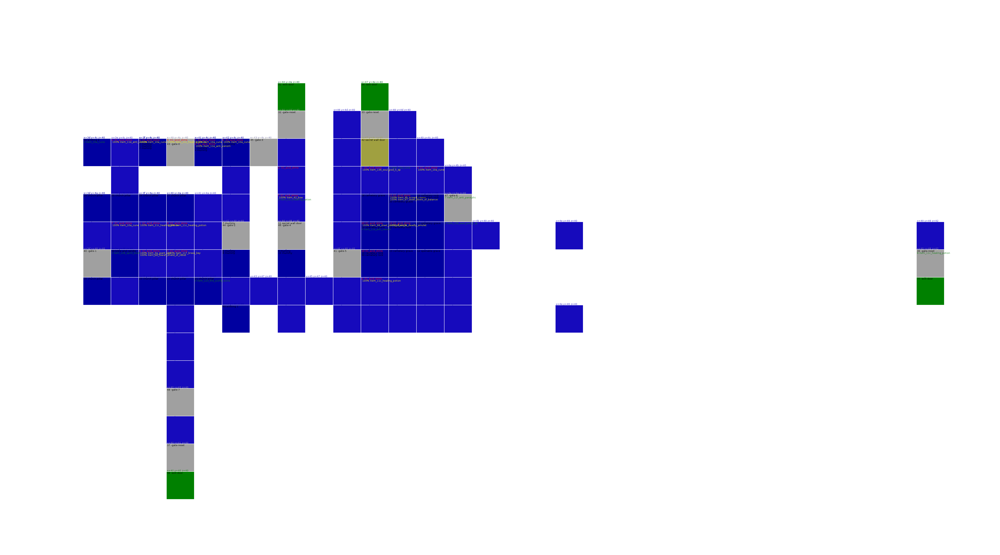
human_world_hidden_region
Item Memory used 10
Creatures score 52
0 item_96_swift_steel_boots
1 item_10a_cune
2 item_d7_ring_of_poison
3 item_122_evil_eye
4 item_90_steel_boots
5 item_11c_healing_potion
6 item_11c_healing_potion
7 item_111_kings_key
8 item_11c_healing_potion
9 item_11c_healing_potion
a item_11e_anti_venom
b item_12e_dorados_ashes
c item_b6_caustic_tower_shield
d item_16_guardian_broad_sword
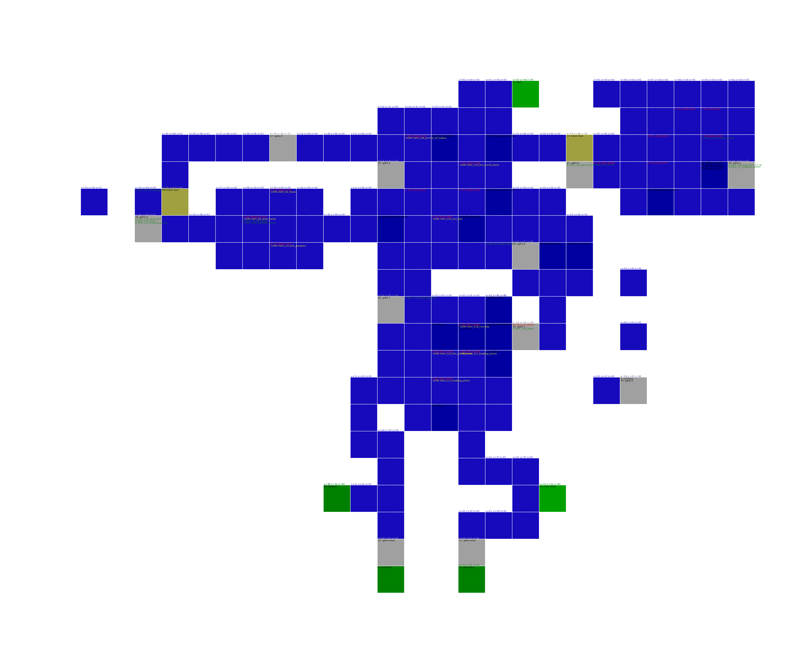
human_world_forgotten_region
Item Memory used 9
Creatures score 66
0 item_10e_sacred_feather
1 item_120_divine_symbol
2 item_10a_cune
3 item_127_acid_vaccine
4 item_10d_lamp
5 item_11d_magic_potion
6 item_11f_anti_paralytic
7 item_136_soul_pod_5_sp
8 item_138_soul_pod_29_sp
9 item_e9_bracelet_of_movement
a item_127_acid_vaccine
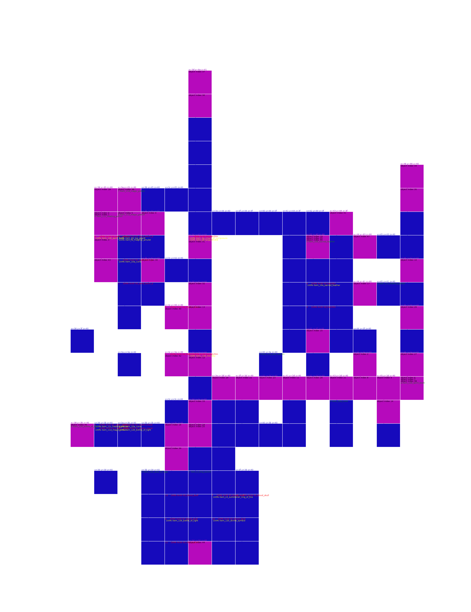
human_world_cursed_region
Item Memory used 7
Creatures score 84
21 100% 0x50 0a_guardian_a pw80 42 103 89 110 93 72 36 a15 a16 m0 a30 a33 a91
30 100% 0x30 04_fat_mole_a pw0 0 0 0 0 0 0 0 a0 a0 m0
0 item_130_blue_crystal
1 item_a1_buckler
2 item_11f_anti_paralytic
3 item_11e_anti_venom
4 item_11f_anti_paralytic
5 item_120_divine_symbol
6 item_126_bottle_of_light
7 item_99_leg_guard
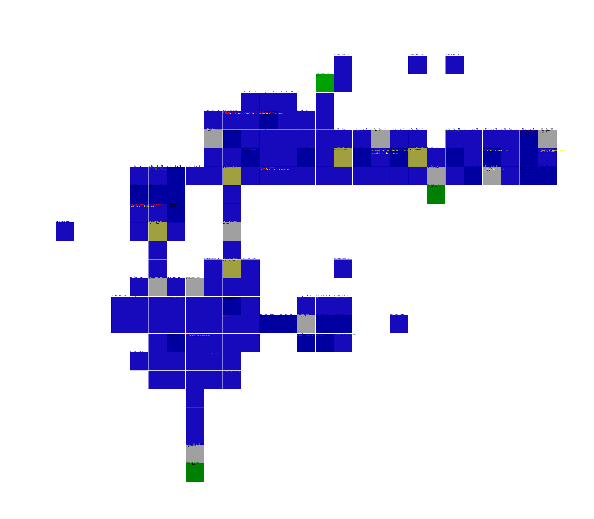
Earth World
earth_world_rotting_cavern
Item Memory used 7
Creatures score 77
30 100% 0x20 0a_blank pw0 0 0 0 0 0 0 0 a0 a0 m5
0 item_86_gauntlet_of_resist
1 item_10a_cune
2 item_120_divine_symbol
3 item_10e_sacred_feather
4 item_11c_healing_potion
5 item_117_brass_key
6 item_11f_anti_paralytic
7 item_10a_cune
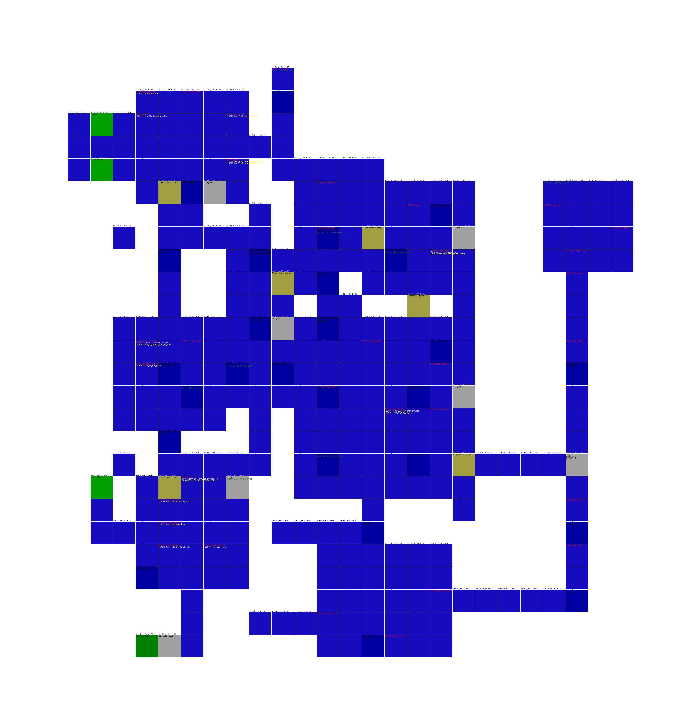
earth_world_poisonous_cavern
Item Memory used 10
Creatures score 68
20 100% 0x10 00_duhrin pw65 124 92 80 70 86 58 30 a0 a0 m8
30 100% 0x20 05_blank pw0 0 0 0 0 0 0 0 a0 a0 m0
31 100% 0x70 04_auriel_b pw150 160 150 65 65 65 65 65 a75 a70 m9
32 100% 0x50 0b_blank pw0 0 0 0 0 0 0 0 a0 a0 m0
33 100% 0x50 0a_blank pw0 0 0 0 0 0 0 0 a0 a0 m7
0 item_10a_cune
1 item_124_poison_vaccine
2 item_126_bottle_of_light
3 item_11c_healing_potion
5 item_125_dust_of_rage
6 item_11c_healing_potion
7 item_10e_sacred_feather
8 item_d_shadow_wolf
a item_11f_anti_paralytic
b item_12e_dorados_ashes
1c item_11c_healing_potion
1d item_136_soul_pod_5_sp
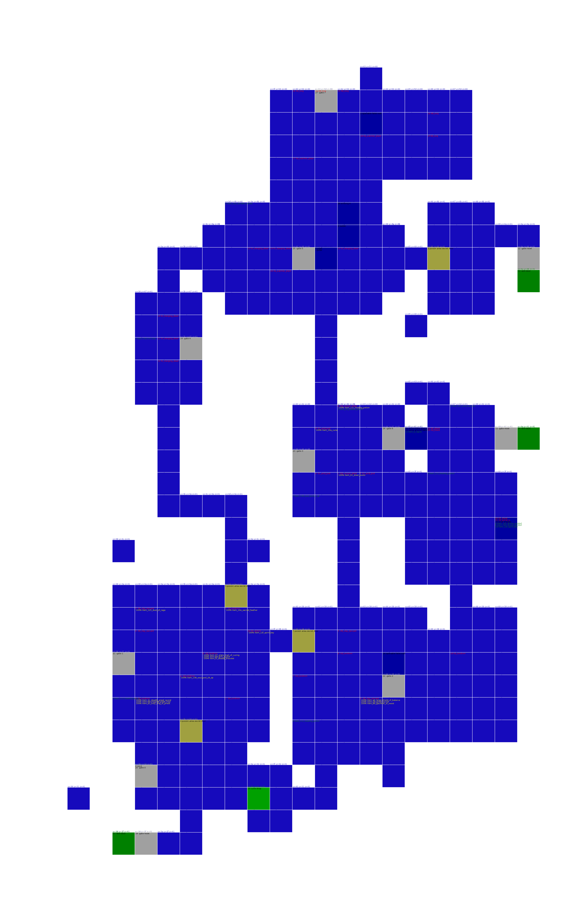
earth_world_stone_cavern
Item Memory used 7
Creatures score 53
13 100% 0x25 0c_dybbuk pw65 60 42 80 80 78 76 68 a12 a14 m10
30 100% 0x50 00_dybbuk pw60 70 40 80 80 78 76 68 a12 a14 m10
31 100% 0x0 04_dybbuk pw60 70 40 80 80 78 76 68 a12 a14 m10
32 100% 0x0 04_dybbuk pw60 70 40 80 80 78 76 68 a12 a14 m10
0 item_137_soul_pod_53_sp
1 item_11c_healing_potion
2 item_128_spirit_book
3 item_120_divine_symbol
4 item_89_arm_guard
5 item_128_spirit_book
6 item_10a_cune
7 item_125_dust_of_rage
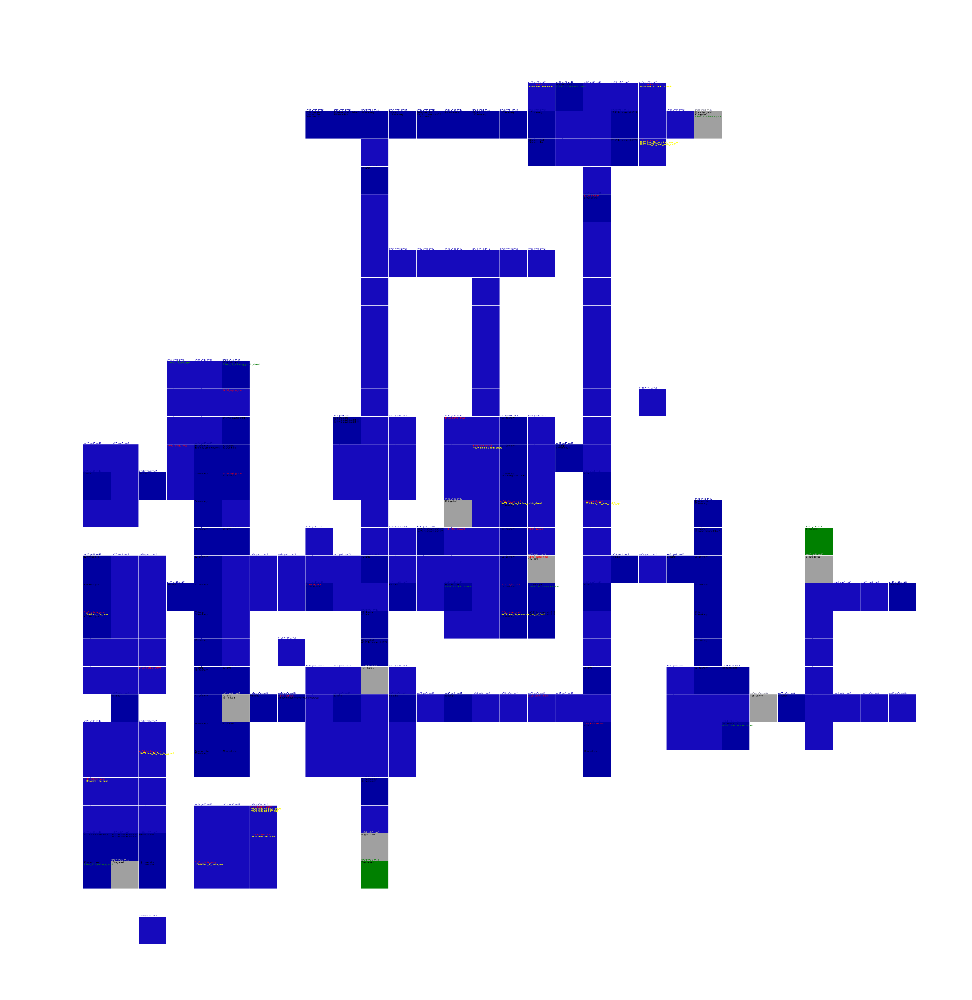
earth_world_quaking_cavern
Item Memory used 8
Creatures score 66
0 item_10e_sacred_feather
1 item_10e_sacred_feather
2 item_10a_cune
3 item_dc_caustic_ring
4 item_128_spirit_book
5 item_11f_anti_paralytic
6 item_127_acid_vaccine
7 item_11f_anti_paralytic
8 item_4e_helm
9 item_139_soul_pod_14_sp
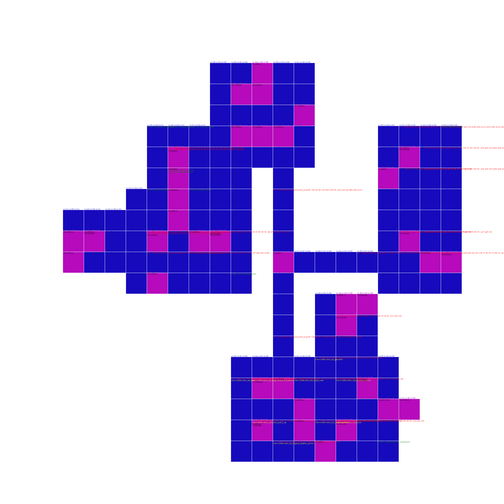
earth_world_false_pit_cavern
Item Memory used 10
Creatures score 60
b 100% 0x30 08_guardian_b pw60 42 125 62 178 179 124 63 a15 a16 m0 a92 a70 a148 a92 a70 a218
c 100% 0x30 08_guardian_b pw60 42 125 62 178 179 124 63 a15 a16 m0 a92 a70 a148 a92 a70 a218
0 item_11d_magic_potion
1 item_11c_healing_potion
2 item_11d_magic_potion
3 item_137_soul_pod_53_sp
4 item_126_bottle_of_light
5 item_127_acid_vaccine
6 item_10c_torch
7 item_127_acid_vaccine
8 item_11c_healing_potion
9 item_a6_large_shield
a item_136_soul_pod_5_sp
b item_10d_lamp
c item_a5_shield_of_resist
d item_124_poison_vaccine
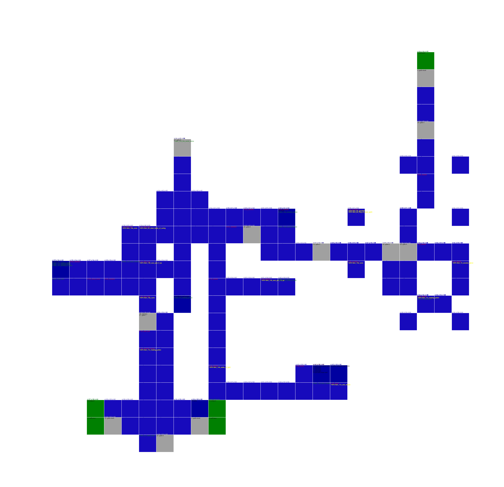
earth_world_hostile_rock_cavern
Item Memory used 5
Creatures score 30
21 100% 0x10 04_dread_knight pw115 100 85 102 150 130 128 95 a45 a40 m11 a190 a145 a112 a110 a155 a245
100% item_c_shadow_blade
0 item_10a_cune
1 item_80_metal_glove
2 item_11d_magic_potion
3 item_10a_cune
4 item_69_magical_plate_mail
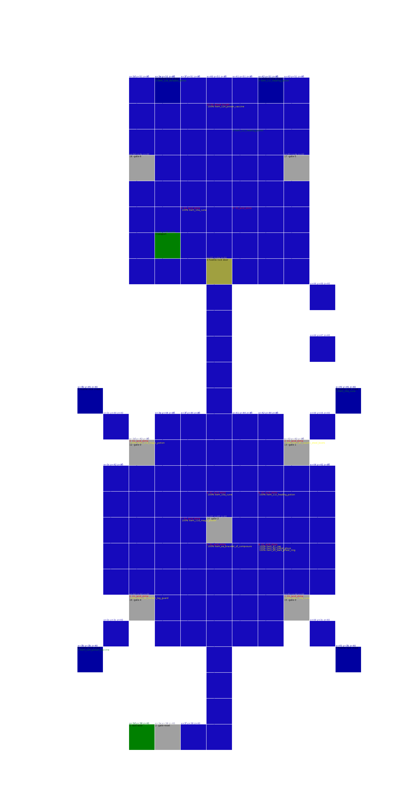
Fire World
fire_world_burning_cavern
Item Memory used 5
Creatures score 102
0 item_ee_mighty_ring
1 item_136_soul_pod_5_sp
2 item_11c_healing_potion
3 item_10e_sacred_feather
4 item_d0_holy_ring_of_resist
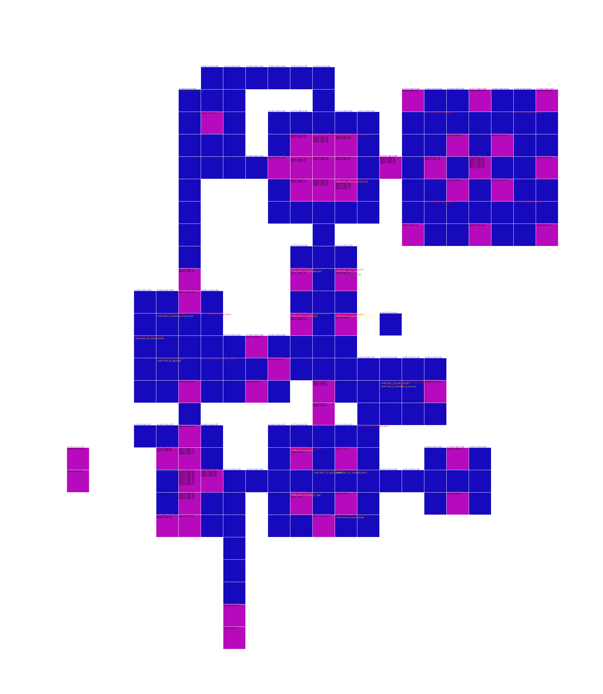
fire_world_molten_cavern
Item Memory used 10
Creatures score 122
21 100% 0x10 02_dead_abraxus pw185 185 185 200 40 120 130 140 a80 a90 m12
100% item_10a_cune
30 100% 0x10 00_abraxus pw85 85 85 600 10 100 100 100 a80 a90 m12
100% item_10a_cune
31 100% 0x5 0c_fat_mole_c pw0 0 0 0 0 0 0 0 a0 a0 m13
100% item_bc_gothic_shield_of_resist
32 100% 0x5 08_fat_mole_b pw0 0 0 0 0 0 0 0 a0 a0 m13
100% item_eb_bracelet_of_curing
0 item_122_evil_eye
1 item_10a_cune
2 item_ab_great_shield
3 item_ff_amulet_of_composure
4 item_11d_magic_potion
5 item_10c_torch
6 item_11e_anti_venom
7 item_127_acid_vaccine
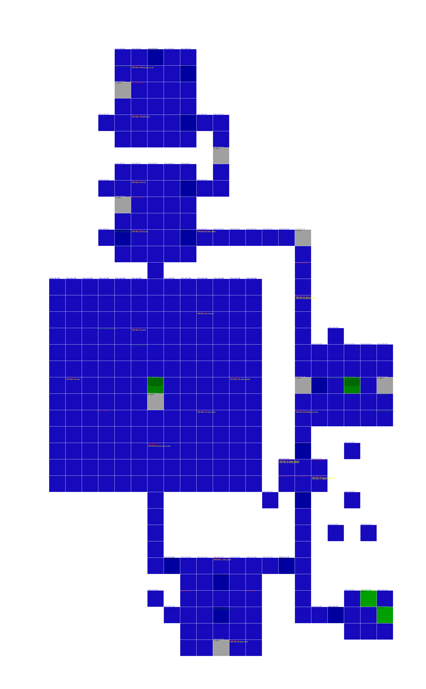
fire_world_phoenix_cave
Item Memory used 14
Creatures score 0
0 item_10c_torch
1 item_120_divine_symbol
2 item_127_acid_vaccine
3 item_79_leather_glove
4 item_5e_leather_armor
5 item_10a_cune
6 item_116_key_of_delusion
7 item_11e_anti_venom
8 item_10e_sacred_feather
9 item_63_plate_mail
a item_11c_healing_potion
b item_2c_deadly_great_sword
c item_124_poison_vaccine
d item_101_amulet_of_resist
e item_11e_anti_venom
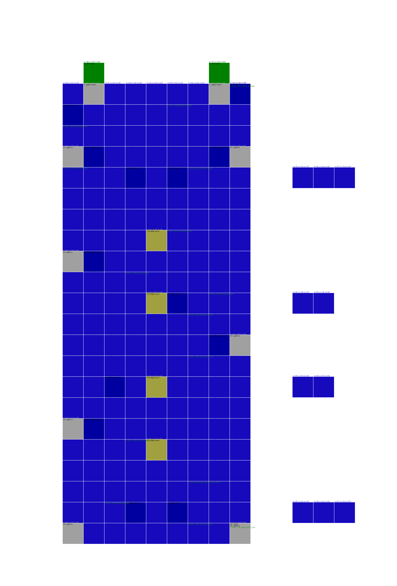
fire_world_ashen_cavern
Item Memory used 5
Creatures score 3044
20 100% 0x100 0c_ebony_knight pw97 125 127 9999 75 109 179 198 a70 a50 m14 a305 a252 a230 a225 a230 a305 a300 a190 a128
100% item_10a_cune
0 item_11c_healing_potion
1 item_123_fire_world_stone
2 item_11c_healing_potion
3 item_10a_cune
4 item_11e_anti_venom
6 item_11c_healing_potion
7 item_136_soul_pod_5_sp
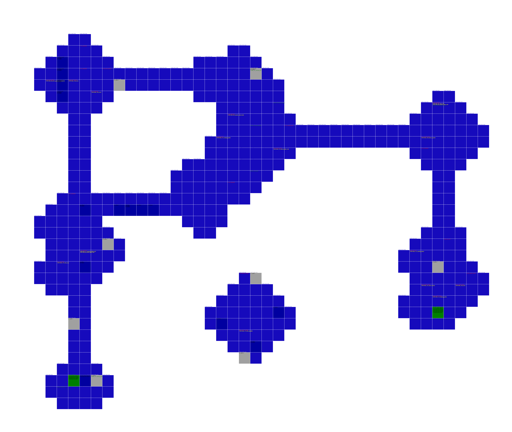
Water World
water_world_impure_pool_area
Item Memory used 5
Creatures score 27
30 100% 0x5 00_fat_mole_f pw0 0 0 0 0 0 0 0 a0 a0 m24
31 100% 0x5 04_blank pw90 90 90 90 90 90 90 90 a0 a0 m25
0 item_124_poison_vaccine
1 item_127_acid_vaccine
2 item_11c_healing_potion
3 item_123_fire_world_stone
4 item_11c_healing_potion
5 item_11f_anti_paralytic
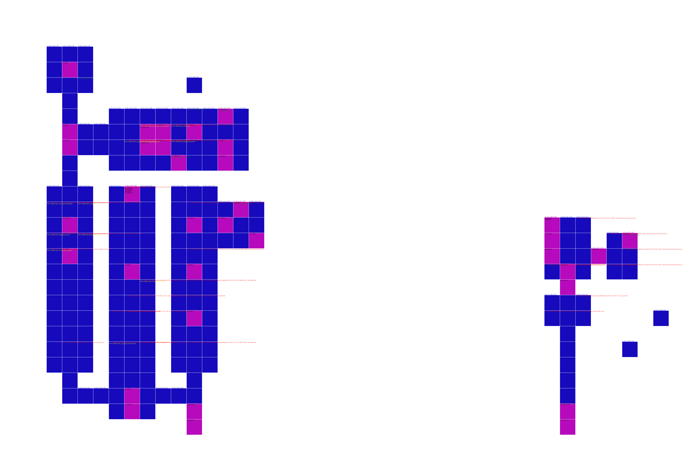
water_world_sunken_river_area
Item Memory used 9
Creatures score 65
0 item_9f_caustic_leg_guard
1 item_11f_anti_paralytic
2 item_11e_anti_venom
3 item_10a_cune
4 item_128_spirit_book
5 item_136_soul_pod_5_sp
6 item_106_amulet_of_recovery
7 item_11c_healing_potion
1c item_10d_lamp
1d item_11f_anti_paralytic
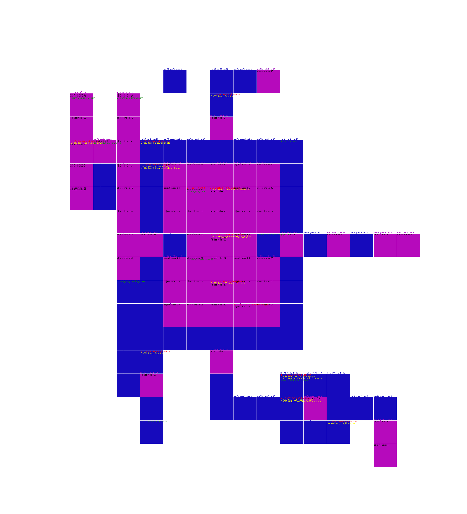
water_world_white_rain_area
Item Memory used 6
Creatures score 74
20 100% 0x10 05_magi_magus pw80 120 108 140 155 362 600 180 a150 a170 m19
100% item_3f_battle_axe
0 item_123_fire_world_stone
1 item_12e_dorados_ashes
2 item_50_full_helm
3 item_10d_lamp
4 item_11f_anti_paralytic
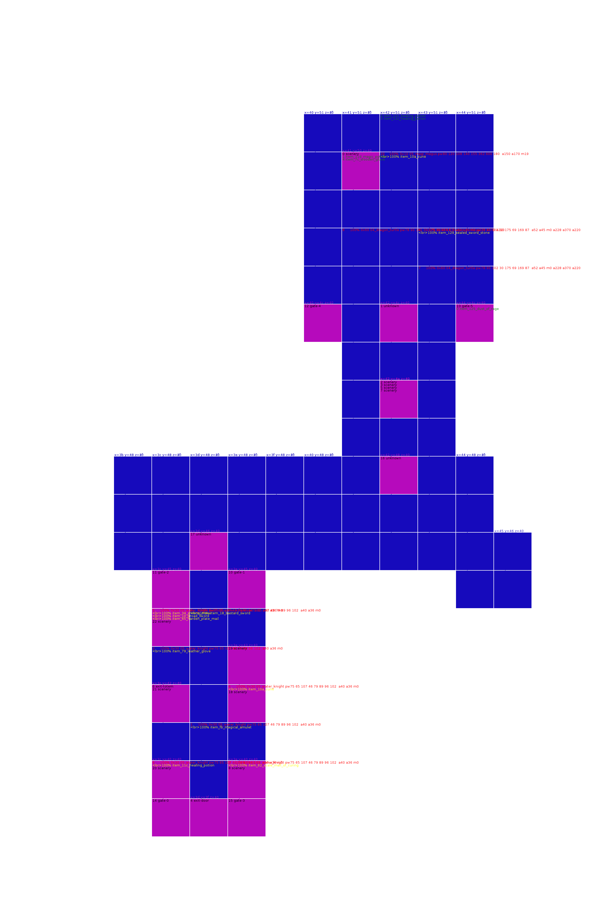
water_world_watery_labyrinth_area
Item Memory used 8
Creatures score 68
0 item_11c_healing_potion
1 item_10e_sacred_feather
2 item_136_soul_pod_5_sp
3 item_10c_torch
4 item_136_soul_pod_5_sp
5 item_11_broad_sword
6 item_127_acid_vaccine
7 item_11c_healing_potion
8 item_12e_dorados_ashes
9 item_11c_healing_potion
a item_32_mace
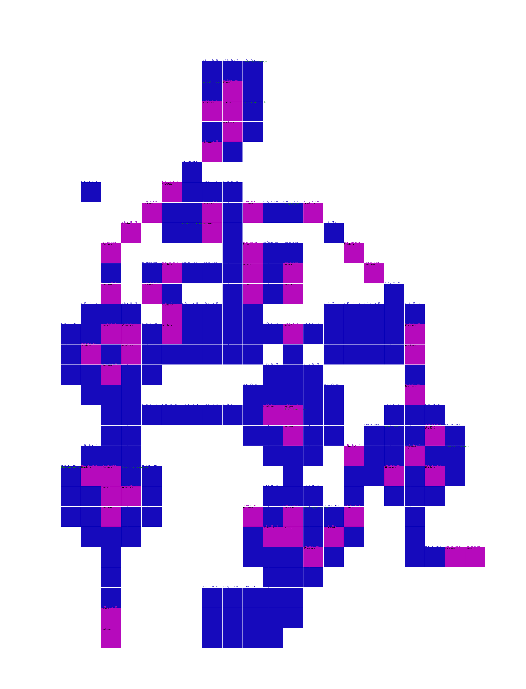
Monster World
monster_world_false_eye_area
Item Memory used 5
Creatures score 265
30 100% 0x10 02_lizard_servant pw150 150 150 150 150 150 150 150 a24 a24 m30
31 100% 0x10 06_lizard_servant pw150 150 150 150 150 150 150 150 a24 a24 m30
0 item_12e_dorados_ashes
1 item_126_bottle_of_light
2 item_11c_healing_potion
3 item_6c_caustic_plate_mail
4 item_11c_healing_potion
5 item_11f_anti_paralytic
6 item_126_bottle_of_light
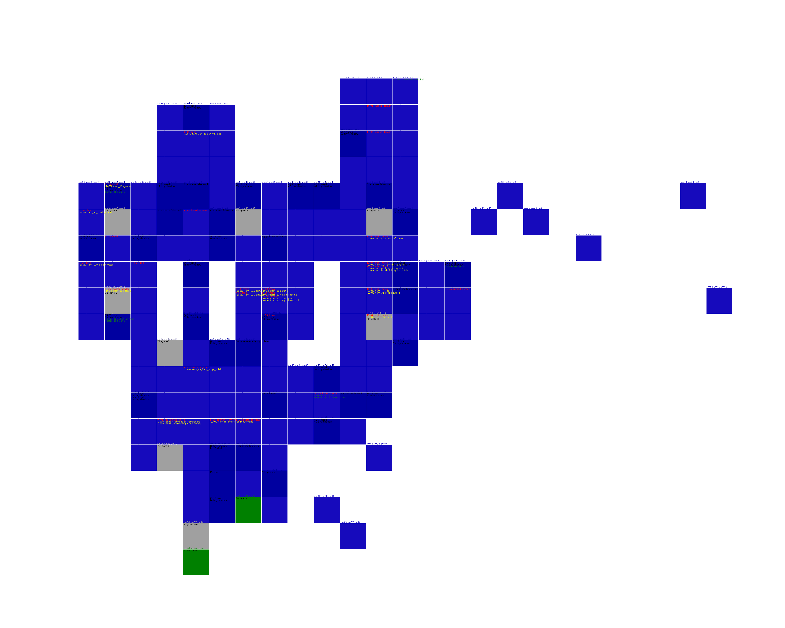
monster_world_screeching_area
Item Memory used 4
Creatures score 258
21 100% 0x10 0e_necron pw75 78 132 360 405 146 525 239 a85 a90 m22 a340 a290 a460 a100 a120 a400 a350 a250 a270
100% item_fd_amulet_of_guardian
30 100% 0x10 01_auriel_c pw250 250 250 520 490 580 590 370 a90 a110 m21 a550 a450 a540 a550 a450 a540
0 item_127_acid_vaccine
1 item_81_fiery_gauntlet
2 item_120_divine_symbol
1c item_120_divine_symbol
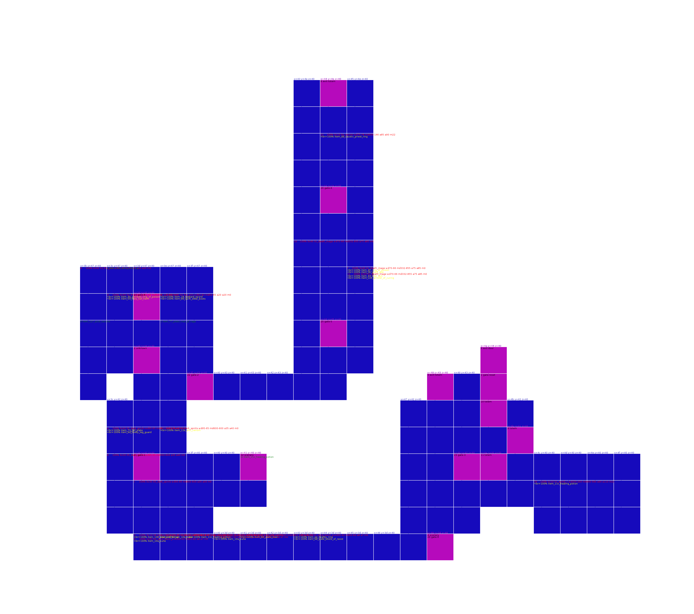
Illusion World
illusion_world_gloomy_domain
Item Memory used 3
Creatures score 92
30 100% 0x20 0e_blank pw0 0 0 0 0 0 0 0 a0 a0 m39
2 item_11c_healing_potion
3 item_10c_torch
5 item_10a_cune
6 item_11c_healing_potion
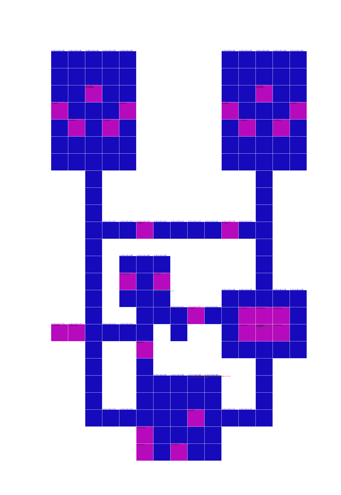
illusion_world_bewilderment_domain
Item Memory used 13
Creatures score 195
0 item_11c_healing_potion
1 item_68_plate_mail
2 item_128_spirit_book
3 item_da_sorcerer_ring_of_poison
4 item_11c_healing_potion
5 item_127_acid_vaccine
6 item_11e_anti_venom
7 item_23_guardian_bastard_sword
8 item_11c_healing_potion
9 item_12e_dorados_ashes
a item_11d_magic_potion
b item_125_dust_of_rage
c item_12c_pitcher_of_nadya_hp
d item_116_key_of_delusion
e item_116_key_of_delusion
f item_116_key_of_delusion
10 item_116_key_of_delusion
11 item_10a_cune
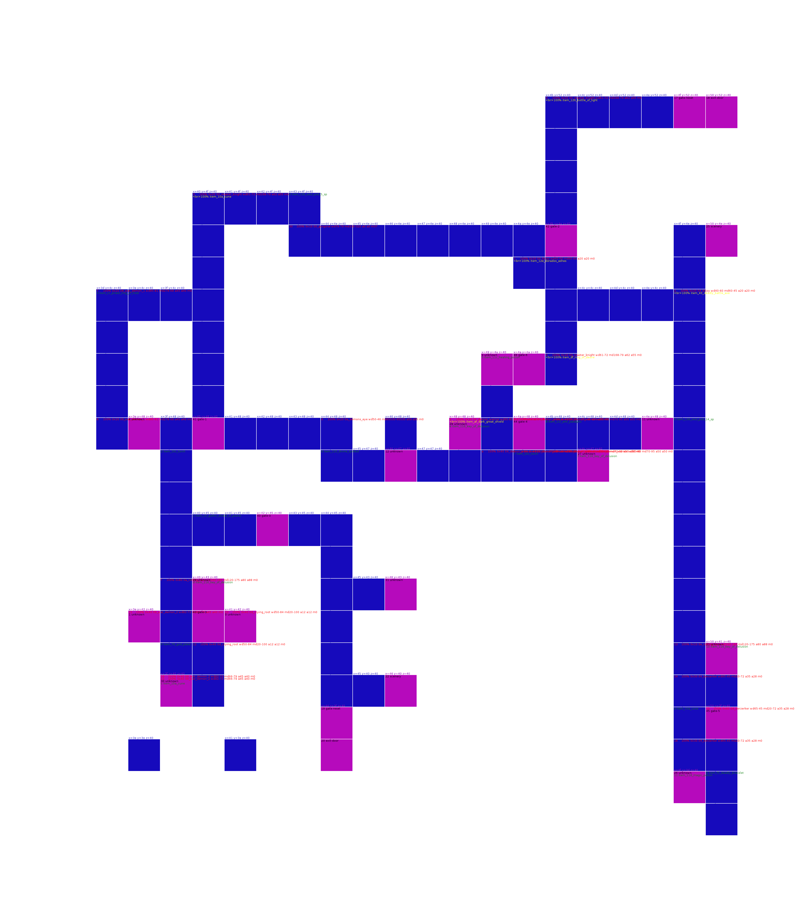
illusion_world_worship_domain
Item Memory used 6
Creatures score 70
21 100% 0x5 04_wildowess pw66 84 55 300 112 400 98 30 a150 a170 m28 a205 a150 a340
22 100% 0x10 01_gorthaur pw85 70 50 250 60 180 50 60 a30 a36 m27 a195 a110 a180
100% item_10a_cune
23 100% 0x5 08_fester pw120 56 49 559 58 579 59 60 a50 a60 m29
100% item_e8_bracelet_of_balance
100% item_53_harden_full_helm
100% item_f1_sorcerer_bracelet
30 100% 0x80 02_fat_mole_d pw0 0 0 0 0 0 0 0 a0 a0 m26
100% item_6_keenest_long_sword
0 item_11d_magic_potion
1 item_12e_dorados_ashes
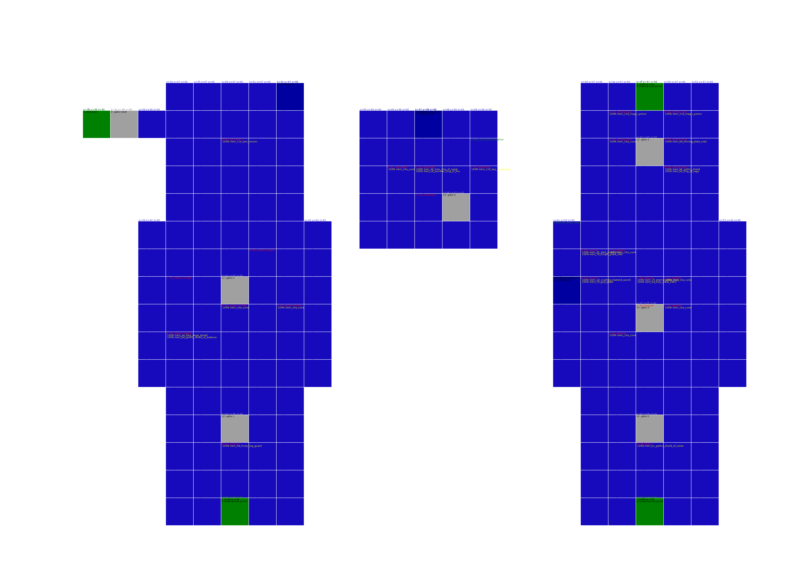
illusion_world_dream_domain
Item Memory used 4
Creatures score 524
20 100% 0x10 01_disguise pw108 82 121 370 600 240 346 230 a90 a110 m20
100% item_11e_anti_venom
0 item_9b_harden_leg_guard
1 item_cb_balance_ring_of_frost
2 item_11f_anti_paralytic
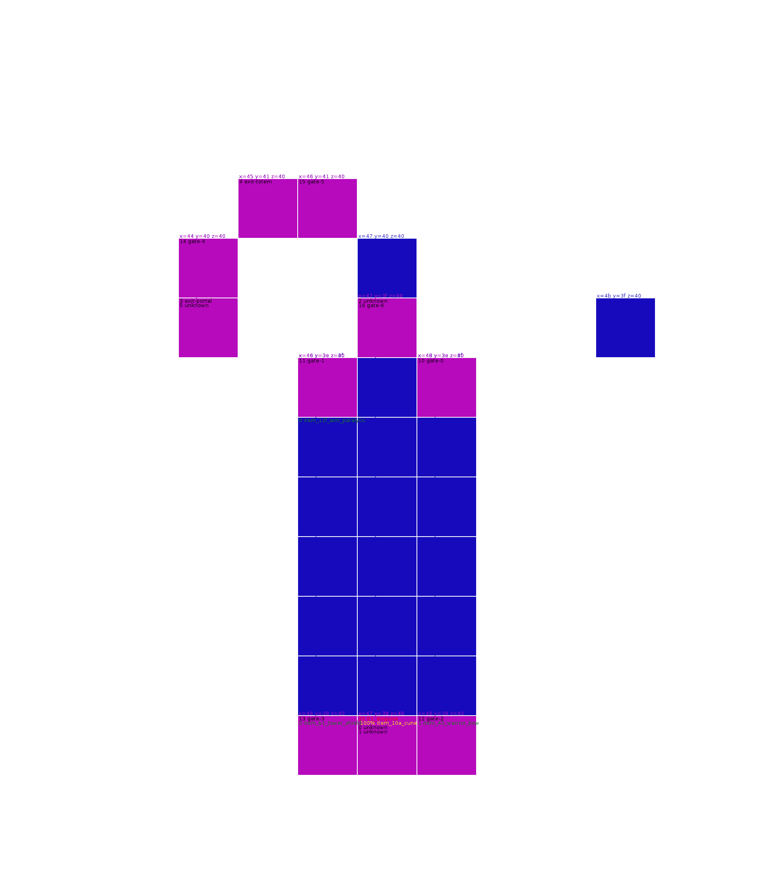
Death World
death_world_dark_castle_layer
Item Memory used 5
Creatures score 219
20 100% 0x30 08_armored_guardian pw79 69 71 62 270 70 62 252 a100 a80 m36 a380 a460 a280 a365 a335 a240
100% item_7_fiery_long_sword
0 item_10d_lamp
1 item_11e_anti_venom
2 item_11c_healing_potion
3 item_19_bastard_sword
4 item_11c_healing_potion
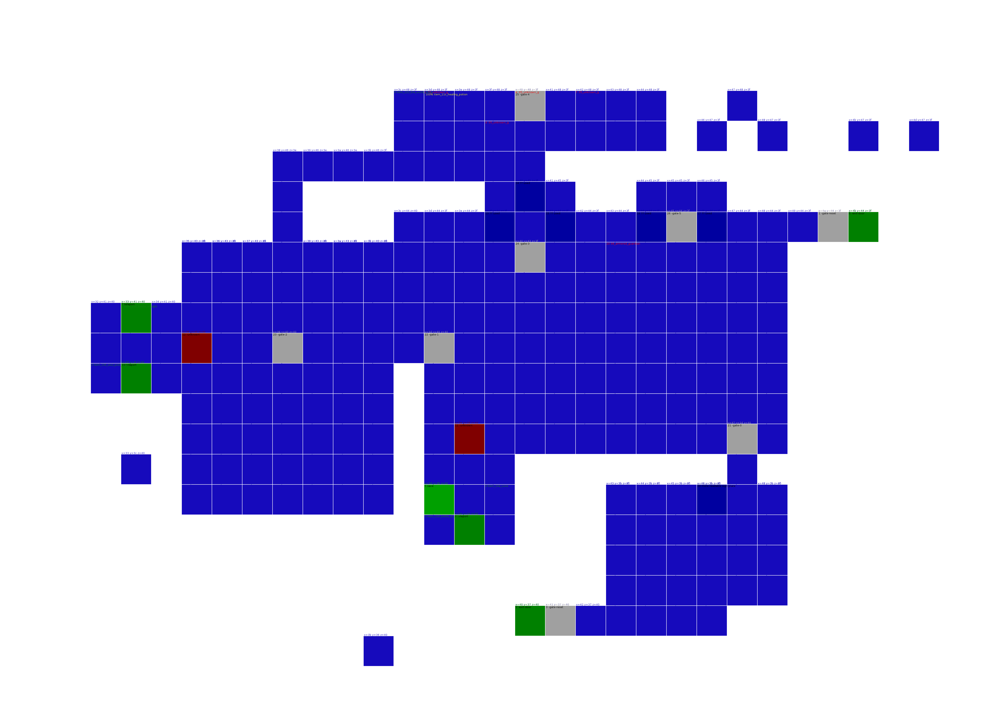
death_world_gate_of_the_dead
Item Memory used 3
Creatures score 492
20 100% 0x5 0c_hollow_mage pw81 50 181 999 999 999 999 999 a44 a144 m23
0 item_139_soul_pod_14_sp
1 item_e7_bracelet_of_resist
2 item_10a_cune
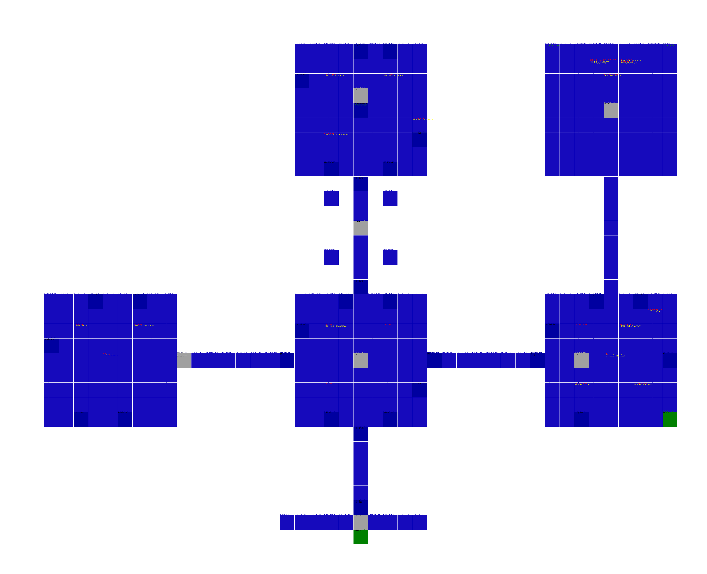
death_world_lingering_curse_layer
Item Memory used 2
Creatures score 202
5 100% 0x40 05_unknown_g pw60 50 70 210 126 230 110 130 a62 a92 m0
6 100% 0x40 05_unknown_g pw60 50 70 210 126 230 110 130 a62 a92 m0
7 100% 0x40 05_unknown_g pw60 50 70 210 126 230 110 130 a62 a92 m0
30 100% 0x20 02_bone_wolf pw70 30 150 80 999 90 120 52 a225 a220 m0
31 100% 0x20 04_blank pw90 90 90 90 90 90 90 90 a0 a0 m31
0 item_10a_cune
1 item_11c_healing_potion
2 item_11c_healing_potion
3 item_11c_healing_potion
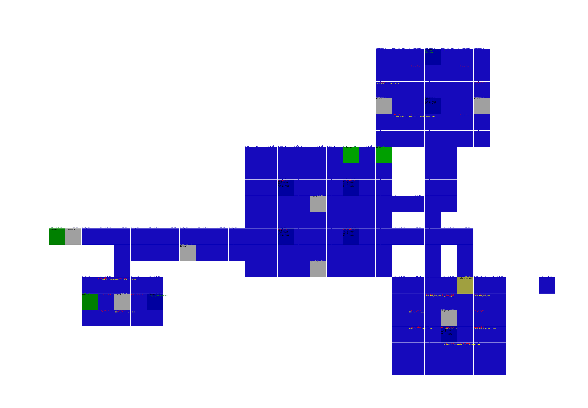
death_world_undead_layer
Item Memory used 9
Creatures score 405
21 100% 0x20 04_king_edward pw220 70 230 600 600 600 600 600 a154 a150 m35 a50 a45 a50 a40 a40 a20 a90 a40 a80
30 100% 0x20 01_unknown_b pw250 250 250 520 490 580 590 370 a90 a110 m34 a520 a450 a550 a620 a480 a550
31 100% 0x10 09_pulsating_heart pw50 48 46 999 999 999 999 999 a0 a0 m0 a150 a100 a140
32 100% 0x10 0d_fat_mole_e pw0 0 0 0 0 0 0 0 a0 a0 m33
0 item_11d_magic_potion
1 item_9a_leg_guard
2 item_136_soul_pod_5_sp
3 item_11c_healing_potion
4 item_10d_lamp
5 item_11d_magic_potion
6 item_8_silent_sword
7 item_12e_dorados_ashes
8 item_126_bottle_of_light
9 item_123_fire_world_stone
a item_11c_healing_potion
1c item_136_soul_pod_5_sp
1d item_11c_healing_potion
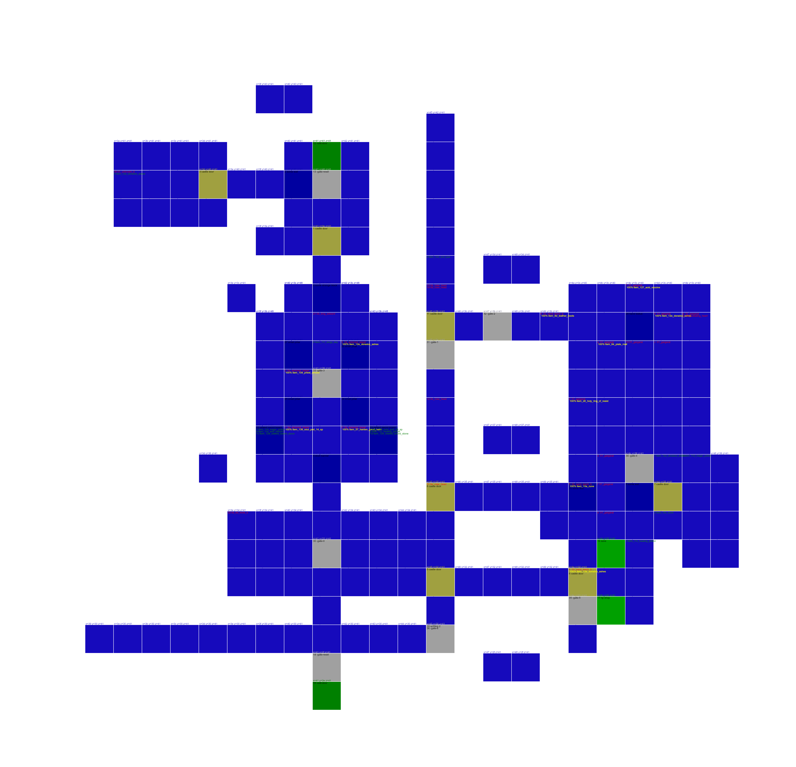
Shadow Tower
shadow_tower_part1
Item Memory used 0
Creatures score 0

shadow_tower_part2
Item Memory used 0
Creatures score 0
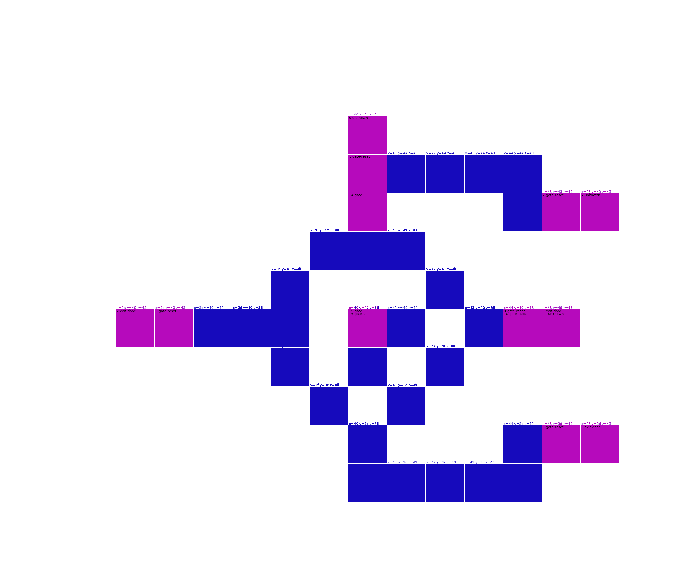
shadow_tower_part3
Item Memory used 0
Creatures score 0

Void
void
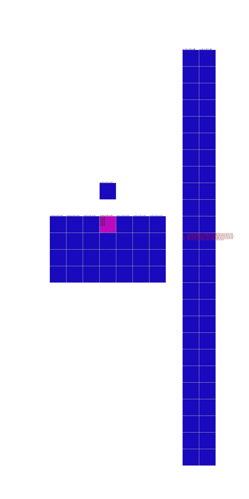